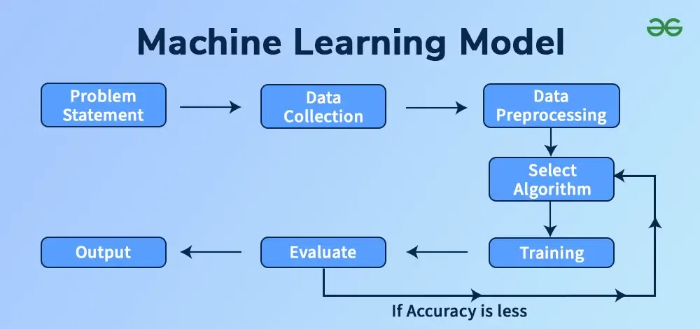

What is Machine Learning?
Machine learning (ML) is a part of AI where computers learn patterns from data instead of being programmed with fixed rules. ML models improve as they are trained on more examples.
Developers use machine learning when rules are hard to write manually, such as spam detection, face recognition, or predicting when a user may click next.
